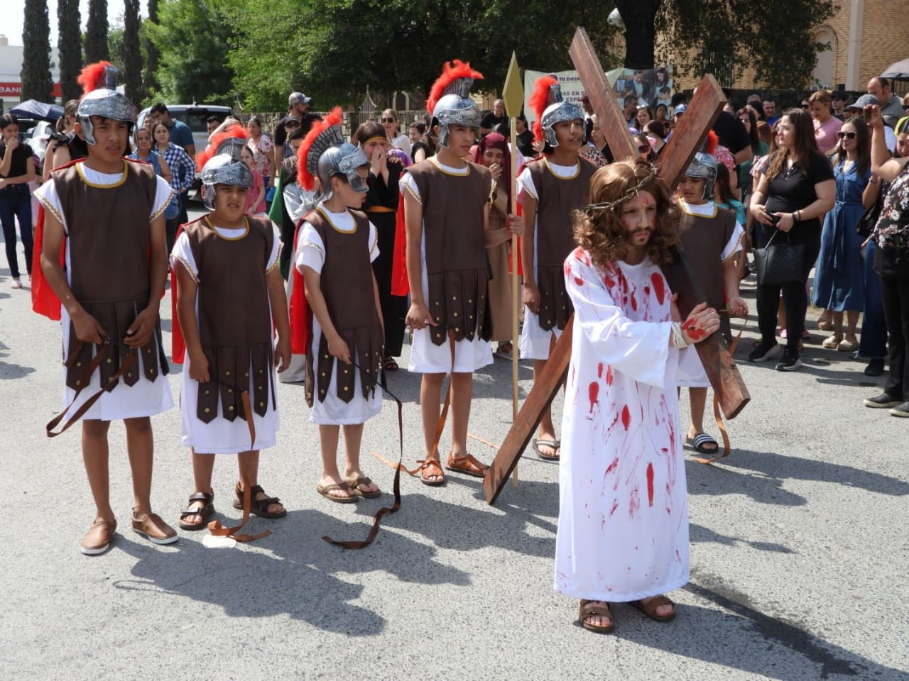
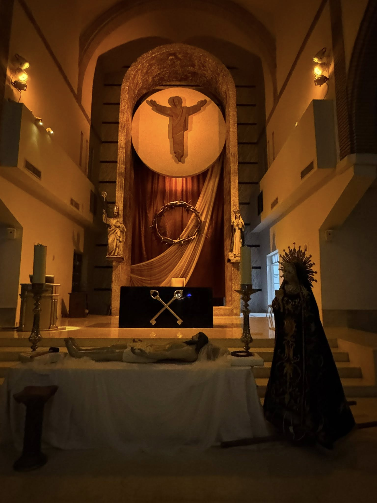
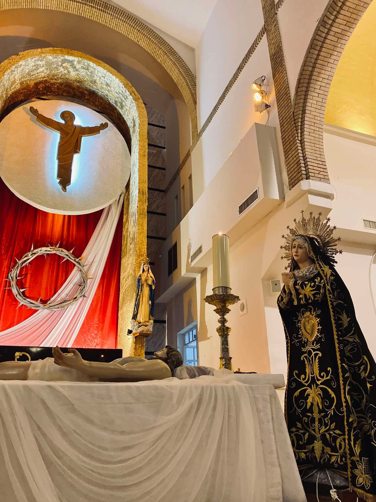
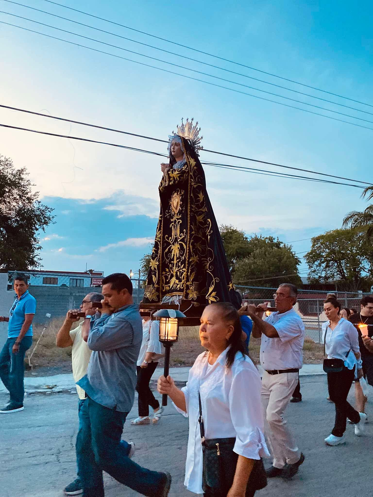

Toca una sección para abrir el texto

10:00 AM | Toca para abrir
Esta Oración está inspirada en el camino que Cristo sufrió desde el cadalso hasta su sepultura. Es muy común ver en Tierra Santa a los peregrinos devotamente siguiendo estos pasos, llamadas estaciones, en las que recordamos la dolorosísima pasión de nuestro Redentor. Sin embargo nuestra intención no es revivir ese dolor, sino tomar conciencia del precio tan alto de nuestra salvación, recordando a la vez, que si bien Cristo nos ha salvado del lazo de la muerte y del pecado, muchos hermanos y hermanas nuestros en todo el mundo siguen sufriendo a causa de los que no se han dejado redimir por la sangre derramada por Cristo. Por estos nuevos verdugos que le hieren y le maltratan en los niños de la calle, en los jóvenes desorientados, en las madres abandonadas, en los hombres explotados, en la naturaleza asfixiada por tanta avaricia e irresponsabilidad, resentimos todos una cultura de la muerte que tenemos que llevar a la cruz para que el mundo vuelva a tener vida, vida como Dios lo quiere. Así pues, hermanos, iniciemos este vía crucis ofreciéndolo por todos aquellos que viven en pecado para que se conviertan de sus malas acciones y vuelvan al camino de la luz y de la vida.
G: En el nombre del Padre, del Hijo y del Espíritu Santo.
R. Amén.
G: El Señor que nos llama a tomar nuestra propia cruz y seguirlo, esté con ustedes.
R. Y con tu espíritu.
Para celebrar activa y conscientemente en este Vía crucis arrepintámonos de corazón de nuestros pecados y egoísmos, y pidamos con humildad perdón y gracia para seguir al Señor. Apiádate, Señor de nosotros.
R. Porque hemos pecado contra ti.
Muéstranos, Señor, tu misericordia.
R. Y danos tu salvación.
Dios todopoderoso tenga misericordia de nosotros, perdone nuestros pecados y nos lleve a la vida eterna.
R. Amén.
Acompañemos a Jesús que ha dicho: "Yo soy el camino, la verdad y la vida, el que viene a mí no andará en tinieblas" y que en sus huellas encontremos cada uno de nosotros su propio camino.
V. Te adoramos, oh Cristo y te bendecimos,
R. Que por tu Santa Cruz, redimiste al mundo y a mí pecador. Amén.
Yo te adoro, mi sufriente Jesús... no solo Caifás y Pilato te condenaron... cuántos de nosotros, con nuestras actitudes, con nuestras tibiezas, con nuestras acciones, que te endosamos para que aparezcas como el culpable, también te condenamos. Cuántos de nosotros hemos fabricado nuestras perversas leyes que ignoran tu santa voluntad, sobres las personas, sobres las cosas, sobre las ideas. Cuántos de nosotros disfrazada mente aparecemos como reyes, señores y jueces de los pobres, de los humildes, de los abatidos y en ellos, Señor, en ellos te volvemos a condenar. Padre, permite que no me cierre a la gracia redentora de la Pasión de tu Hijo, que no obstaculice su luz en mí para que pueda convertirme de todo corazón a ti y caminar siempre por tus sendas.
Estaba la Madre dolorosa junto a la cruz.
R. De la que colgaba su Hijo.
Padre nuestro... Dios te salve María... Gloria al Padre...
V. Te adoramos, oh Cristo y te bendecimos,
R. Que por tu Santa Cruz redimiste al mundo y a mí pecador. Amén.
Yo te adoro, mi atormentado Jesús, abismo inmenso de misericordia. Llevas tu cruz por amor a mí y al mundo entero. No fue suficiente para nosotros tus palabras, tus milagros, quisimos tus humillaciones, tu dolor, tus llagas, tu cruz... yo te alabo, mi Salvador y mi Dios... tu Cruz debía ser mía, no tuya, mis pecados, mis cobardías, mi necedad... te pusieron en ella. Yo deseo ser tu discípulo, mi dulce Jesús, ser evangelizador, ayudar a mis familiares y amigos a construir el cielo aquí en la tierra para poder merecerlo en el cielo... permíteme, te lo pido, cargar ahora yo con la cruz de mis hermanos, sobre todo aquellos que ya no pueden con su vida, con la cruz de los ancianos abandonados, con la cruz de los niños enfermos de sida, con la terrible cruz del desempleo.
Estaba la Madre dolorosa junto a la cruz.
R. De la que colgaba su Hijo.
Padre nuestro... Dios te salve María... Gloria al Padre...
V. Te adoramos, oh Cristo y te bendecimos,
R. Que por tu Santa Cruz redimiste al mundo y a mí pecador. Amén.
Yo te veo, mi amigo, tu Cruz es pesada, mis pecados y los pecados del mundo entero se descargan contra Ti. Yo te adoro, Señor Dios mío... por esta tu primera caída, dame la gracia de no quedarme tirado bajo el peso de mis pecados, no sucumbir ante el pecado de los demás, no arrastrarme en la suciedad que hemos hecho de este mundo. No deseo, Señor, permanecer inmóvil ante tanto dolor y tanto sufrimiento. No deseo, Señor que los gritos y los llantos de tantos hermanos y hermanas que sufren en silencio sean ahogados por el peso de su cruz. Señor, dame fuerza, dame confianza, dame valor para salir al encuentro del que sufre solo cargando su cruz.
Estaba la Madre dolorosa junto a la cruz.
R. De la que colgaba su Hijo.
Padre nuestro... Dios te salve María... Gloria al Padre...
V. Te adoramos, oh Cristo y te bendecimos,
R. Que por tu Santa Cruz redimiste al mundo y a mí pecador. Amén.
Cuánta razón tenía el justo Simeón al profetizar que a tu Madre santísima una espada de dolor le habría de atravesar el alma. Y es que a quién no se le partiría el alma al ver tu dolor, al ver tu rostro, al sentir tu alma... cargando solo el peso de nuestros pecados. Cuánta razón tenías Tú mismo al decir que los que cumplen y ponen en práctica tu Palabra esos son tu Madre, tus hermanos y tus hermanas. Sí Jesús mío, María santísima no solo es tu madre por llevarte en su seno, lo es también por cargar junto a Ti, su cruz también dolorosísima pues tanto como Madre y como discípula sangraba su corazón de impotencia, de querer arrancarte tan infame cruz y llevarla ella misma. Sí Señor, cuántas madres hoy en día lloran la ausencia de sus hijos, algunos muertos en las guerras, otros confinados injustamente en las cárceles, otros derrotados por el alcohol y las drogas... Cuántas madres son torturadas, violadas, golpeadas por nuestros viles pecados... Cuántas mujeres, Señor, con profundísimo dolor caminan con su cruz de tras de Ti en el amargo camino en el que hemos convertido su vida.
Estaba la Madre dolorosa junto a la cruz.
R. De la que colgaba su Hijo.
Padre nuestro... Dios te salve María... Gloria al Padre...
Volteo, Señor a todos lados, trato de encontrar, de buscar, me esfuerzo y no encuentro a los jóvenes sanos y valientes, fuertes y varoniles que deseen ayudarte a cargar tu cruz. Siento tu soledad, Señor y tengo miedo... miedo a que te quedes solo con tu cruz... solo con tu intención de salvarnos. ¿Dónde están los nuevos Cirineos? ¿Dónde las vocaciones sacerdotales y religiosas? ¿Dónde los que quieren imitarte?. Señor... ya no le interesas a los jóvenes... no te quieren porque estás herido, sucio, sangrante... Ellos, Señor no quieren ese modelo... quieren un Cristo que no sufra, un Cristo vigoroso, alegre, amigo... no al fracasado que lleva su cruz.
Estaba la Madre dolorosa junto a la cruz.
R. De la que colgaba su Hijo.
Padre nuestro... Dios te salve María... Gloria al Padre...
El amor es atrevido. Solo una mujer tuvo el valor de meterse entre la multitud y limpiar el rostro de Jesús con su velo, y tu, mi Jesús, imprimiste en él tu Rostro Divino. ¡Qué heroica mujer! ¡Qué digna de ser recordada! Tú lo sabes, Señor, son muy pocos los que están dispuestos a exponerse, a declararse, a enfrentarse a la multitud. La mayoría de nosotros nos escondemos, nos damos golpes de pecho, nos horrorizamos y bajamos nuestras cabezas para no ver tu suplicio diario en miles y miles que gime el peso del pecado de los demás. Sí Señor tenemos instituciones para que hablen por ellos, para que gestionen por ellos... pero pocas veces salen a su encuentro, pocas veces dan la cara... pocas veces alivian su rostro marcado por la pena, por el sol, por el trabajo. Señor ¿Dónde están las Verónicas de hoy? ¿Quién alivia el rostro perdido de los enfermos?. ¿Quién sale hoy a tu encuentro?
Estaba la Madre dolorosa junto a la cruz.
R. De la que colgaba su Hijo.
Padre nuestro... Dios te salve María... Gloria al Padre...
Mi dolorido Jesús: El peso de la Cruz se hace más pesado. Ahora somos los cristianos, tus amigos, los que te hacemos caer por Segunda Vez: Nuestras ingratitudes, desprecios en la Eucaristía, sacrilegios, blasfemias, injusticias, herejías, impurezas, abortos, adulterios, homosexualidad, drogas... Mi pobre Jesús, la misericordia infinita, te amo... ayúdame a entender y vivir el Sacramento de la Reconciliación... el Papa Juan Pablo II se confiesa a diario... gracias, mi querido amigo Jesús: Por tu humildad en la Eucaristía, tienes misericordia de mí y del mundo entero. Gloria a Dios.
Estaba la Madre dolorosa junto a la cruz.
R. De la que colgaba su Hijo.
Padre nuestro... Dios te salve María... Gloria al Padre...
Estas son las únicas palabras que pronunció mi amado Jesús en el Viacrucis: "Le seguía una gran muchedumbre del pueblo y de mujeres, que se herían y lamentaban por El. Vuelto a ellos les dijo Jesús: Hijas de Jerusalén, no lloréis por mí; llorad más bien por vosotras mismas y por vuestros hijos, porque días vendrán en que se dirá: Dichosas las estériles, y los vientres que no engendraron, y los pechos que no amamantaron. Entonces dirán a los montes: Caed sobre nosotros; y a los collados: Ocultadnos, porque si esto se hace en el leño verde, en el seco ¿qué se hará?".
Ya estamos en el Tercer Milenio, "el leño ya está seco"... Mi cariñoso Jesús, dulzura del corazón: Por tus grandes sufrimientos diarios en el Tabernáculo, tú tienes misericordia de mí y del mundo entero. Gracias, mi amor y mi todo.
Estaba la Madre dolorosa junto a la cruz.
R. De la que colgaba su Hijo.
Padre nuestro... Dios te salve María... Gloria al Padre...
La Cruz se hace todavía más pesada: El justo cae siete veces y se levanta otra vez, pero el malvado se arruina" (Prov.24:16)... si, mi Jesús, aun tus sacerdotes y monjas pecan... ¡y esta es la caída que más daño te produce!. Te amo, mi dolorido sacerdote Jesús, y te alabo por tu Sacramento de la Confesión. El buen Papa Juan XXIII se confesaba a diario... el Espíritu Santo nos anima a ello, "acerquémonos confiadamente al trono de la gracia, a fin de recibir misericordia y hallar gracia en el auxilio oportuno" (Hb 4,16)... gracias, mi queridísimo amigo Jesús: Por tu paciencia en la Eucaristía, tienes misericordia de mí y del mundo entero.
Estaba la Madre dolorosa junto a la cruz.
R. De la que colgaba su Hijo.
Padre nuestro... Dios te salve María... Gloria al Padre...
Yo te adoro, mi desnudado Jesús, resplandor del Padre. Los soldados "dividieron mis vestidos y echaron suerte sobre mi túnica", cumpliéndose así 2 de las 13 profecías del Salmo 22, que se cumplieron a la letra en el Calvario. Una nueva indignidad, avergonzado ante los ojos de los hombres... y una nueva lección: Para complacerte, Jesús, tengo que despojar mi corazón de todo egoísmo e impureza, y desear nada más que a Dios... gracias, mi Jesús: Por tu humildad y despojo total en la Eucaristía, tienes misericordia de mí y del mundo entero.
Estaba la Madre dolorosa junto a la cruz.
R. De la que colgaba su Hijo.
Padre nuestro... Dios te salve María... Gloria al Padre...
Cuando llegaron al Calvario, que en hebreo se dice Gólgota, lo crucificaron allí, y a los dos malhechores, uno a su derecha y otro a su izquierda... esta es la apoteosis del amor de Dios, sin ninguna queja, ¡esta es la hora grande de la humanidad!... el Cordero de Dios pagando por mis pecados y por los pecados del mundo entero... gracias mil veces, mi crucificado Jesús. Y ahí, al pie de la Cruz, estaba también Mamá María, recibiendo en su corazón mil clavos por cada uno que clavaban en su Hijo... Jesús, el Varón de Dolores... María, la Madre de los Dolores... Gracias, Jesús, porque en la Cruz redimiste mi cuerpo, mi alma y mi espíritu, como había profetizado Isaías (53:4-5)... pagaste por mis pecados y vicios (las factorías de hacer pecados), por mis dolores y enfermedades, y ganaste la paz para mí y para el mundo entero. Gracias, mi Dios: Por tus sufrimientos en el Sagrario, tienes misericordia de mí y del mundo entero.
Estaba la Madre dolorosa junto a la cruz.
R. De la que colgaba su Hijo.
Padre nuestro... Dios te salve María... Gloria al Padre...
Te adoro y te bendigo, mi Jesús, mi Dios, mi Salvador... silencio... Jesús ha muerto... después de 6 horas en la Cruz... ahora la tierra tiembla con un terremoto, las tumbas se abren, la cortina del Templo se desgarra... es la gloriosa hora de la Redención y la fundación de Tu Iglesia, para continuar tu Redención por los siglos... Mi muerto Jesús: Tú podías haber escogido otra forma de Redención, pero elegiste la Cruz, por amor, en amor... Usa ahora mis manos y mi cuerpo, Jesús, para alimentar al hambriento, y vestir al desnudo, y enseñar al que no sabe, y corregir al que hierra... ¡usa tu Iglesia!.
Yo quiero acompañarte, mi amado Jesús, hoy y cada día, en el Santo Sacrificio de la Misa... y no aburriéndome, como los soldados en el Calvario, sino con la emoción e intensidad de María y San Juan y el buen Ladrón... Gracias, mi muerto Jesús, la vida del universo. Yo quiero morir a todo que no seas Tú. Ayúdame a vivir como la Virgen María: Todo para el Niño, con el Niño, por el Niño, en el Niño... ¡y mi vecino es Cristo, el Niño!... Gracias, mi Dios: Por tu paciente prisión de amor en el Sagrario, tienes misericordia de mí y del mundo entero.
Estaba la Madre dolorosa junto a la cruz.
R. De la que colgaba su Hijo.
Padre nuestro... Dios te salve María... Gloria al Padre...
Ahora Jesús está otra vez en tus brazos, María, como en Belén, pero, ¡qué diferencia!, y es que ha pasado por otras manos, las mías, Mamá María... la lanza de muerte de tu único Hijo atraviesa tu corazón, Virgen María... pero Tú no mueres, sigues viva muriendo mil veces... es la espada profetizada por el buen Simeón (Lc 2,35). Recíbeme en tus brazos también a mí, mi Madre Dolorosa, con el mismo amor con el que recibiste a Jesús, y ruega por mí para que nunca vuelva a pecar, para que nunca jamás vuelva a crucificar a tu Hijo Jesús, porque cada vez que peco reproduzco su Pasión entera en mi carne (Hb 6,6). Las labios de Jesús están muertos, no puede bendecir... sus manos no pueden sanar... sus pies no pueden andar... ¡Aquí me tienes, Jesús!, úsame para que sea tu apóstol, para que ayude a cumplir en lo que falta a tu redención, mi Dios vivo, mi Rey invencible e inmortal (Col 1,24). Un millón de gracias, mi querida madre María. Un millón de gracias, mi queridísimo amigo Jesús: Por tu amor y gozo en la Eucaristía, tienes misericordia de mí y del mundo entero.
Estaba la Madre dolorosa junto a la cruz.
R. De la que colgaba su Hijo.
Padre nuestro... Dios te salve María... Gloria al Padre...
Jesús es enterrado, la tumba sellada por Pilatos... y sus enemigos pensaron que con ello habían acabado con Jesús definitivamente... ¡Pero Jesús resucitó!... y la oscuridad del sepulcro se convirtió en la luz del universo... y la sombra de la Cruz llena el mundo entero... con su muerte real, Jesús nos da vida real... ¡y eterna!, alabado sea Dios. Un millón de gracias, mi querido amigo Jesús, vivo en mi corazón, Rey de Reyes y Señor de Señores: Límpiame, para que cuando te reciba en la Sagrada Comunión, mi cuerpo sea morada digna de recibir tu Cuerpo, Sangre, Alma y Divinidad... Por tu gran amor vivo en la Santa misa, tienes misericordia de mí y del mundo entero... y día a día, estás conquistando el universo con tu espada de dos filos: La "espada" del amor... con sus dos filos: El del dolor del Calvario y la humildad de la Eucaristía... ¡y ya somos 2,000 millones de Cristianos!, para la gloria de Dios. Alabado seas por siempre, mi Dios vivo, Rey de gloria. Amén (Ap 1,16, Sal 2,9).
El Vía crucis no es solo un camino de dolor, es el camino de la cruz, de aquella que Jesús dijo: "Quien no toma su cruz de cada día y me sigue, no es digno de mi". En efecto hermanos, se trata de la cruz que da vida, de la cruz que inspira confianza, que nos da fuerzas para cumplir la voluntad de Dios, que no es otra cosa sino vivir la propia misión, sin la cual, no es posible la felicidad. Recordar este camino de la cruz de Cristo nos ayuda a comprender la Misión de nuestro Redentor, pero también nos enseña a asumir nuestra propia cruz con respeto, con serenidad, con templanza.
Pidámosle a Dios, nuestro Padre, que por los méritos de la dolorosísima Pasión de su Hijo, nos permita a nosotros asemejarnos a él y cumplir hasta el extremo, con su santa voluntad. Por Jesucristo, nuestro Señor.
R. Amén.
Nos retiramos en paz, a servir a Dios y a nuestros hermanos.
R. Demos gracias a Dios.

5:00 PM | Toca para abrir
La procesión sale de sacristía al altar, no hay ciriales, no hay incienso, no hay manteles, etc. Al llegar se hace una postración y se pasa inmediatamente a la sede para rezar la Oración Colecta. No se dice "Oremos".
Sacerdote: Acuérdate, Señor, de tu gran misericordia, y santifica a tus siervos con tu constante protección, ya que por ellos Cristo, tu Hijo, derramando su Sangre, instituyó el misterio pascual. El que vive y reina por los siglos de los siglos.
R. Amén.
PRIMERA LECTURA
Del libro del profeta Isaías 52, 13-53, 12.
El fue traspasado por nuestros crímenes.
He aquí que mi siervo prosperará, será engrandecido y exaltado, será puesto en alto. Muchos se horrorizaron al verlo, porque estaba desfigurado su semblante, que no tenía ya aspecto de hombre; pero muchos pueblos se llenaron de asombro. Ante él los reyes cerrarán la boca, porque verán lo que nunca se les había contado y comprenderán lo que nunca se habían imaginado. ¿Quién habrá de creer lo que hemos anunciado? ¿A quién se le revelará el poder del Señor?. Creció en su presencia como planta débil, como una raíz en el desierto. No tenía gracia ni belleza. No vimos en él ningún aspecto atrayente; despreciado y rechazado por los hombres, varón de dolores, habituado al sufrimiento; como uno del cual se aparta la mirada, despreciado y desestimado. El soportó nuestros sufrimientos y aguantó nuestros dolores; nosotros lo tuvimos por leproso, herido por Dios y humillado, traspasado por nuestras rebeliones, triturado por nuestros crímenes. El soportó el castigo que nos trae la paz. Por sus llagas hemos sido curados. Todos andábamos errantes como ovejas, cada uno siguiendo su camino, y el Señor cargó sobre él todos nuestros crímenes. Cuando lo maltrataban, se humillaba y no abría la boca, como un cordero llevado a degollar; como oveja ante el esquilador, enmudecía y no abría la boca. Inicuamente y contra toda justicia se lo llevaron. ¿Quién se preocupó de su suerte?. Lo arrancaron de la tierra de los vivos, lo hirieron de muerte por los pecados de mi pueblo, le dieron sepultura con los malhechores a la hora de su muerte, aunque no había cometido crímenes, ni hubo engaño en su boca. El Señor quiso triturarlo con el sufrimiento. Cuando entregue su vida como expiación, verá a sus descendientes, prolongará sus años y por medio de él prosperarán los designios del Señor. Por las fatigas de su alma, verá la luz y se saciará; con sus sufrimientos justificará mi siervo a muchos, cargando con los crímenes de ellos. Por eso le daré una parte entre los grandes, y con los fuertes repartirá despojos, ya que indefenso se entregó a la muerte y fue contado entre los malhechores, cuando tomó sobre sí las culpas de todos e intercedió por los pecadores.
Palabra de Dios. R. Te alabamos, Señor.
SALMO RESPONSORIAL
Del Salmo 30.
R. Padre, en tus manos encomiendo mi espíritu.
A ti, Señor, me acojo, que no quede yo nunca defraudado. En tus manos encomiendo mi espíritu y tú, mi Dios leal, me librarás. R.
Se burlan de mí mis enemigos, mis vecinos y parientes de mí se espantan, los que me ven pasar huyen de mí. Estoy en el olvido, como un muerto, como un objeto tirado en la basura. R.
Pero yo, Señor, en ti confío. Tú eres mi Dios, y en tus manos está mi destino. Líbrame de los enemigos que me persiguen. R.
Vuelve, Señor, tus ojos a tu siervo y sálvame, por tu misericordia. Sean fuertes y valientes de corazón, ustedes, los que esperan en el Señor. R.
SEGUNDA LECTURA
De la carta a los hebreos 4, 14-16; 5, 7-9.
Aprendió a obedecer y se convirtió en la causa de la salvación eterna para todos los que lo obedecen.
Hermanos: Jesús, el Hijo de Dios, es nuestro sumo sacerdote, que ha entrado en el cielo. Mantengamos firme la profesión de nuestra fe. En efecto, no tenemos un sumo sacerdote que no sea capaz de compadecerse de nuestros sufrimientos, puesto que él mismo ha pasado por las mismas pruebas que nosotros, excepto el pecado. Acerquémonos, por tanto, con plena confianza al trono de la gracia, para recibir misericordia, hallar la gracia y obtener ayuda en el momento oportuno. Precisamente por eso, Cristo, durante su vida mortal, ofreció oraciones y súplicas, con fuertes voces y lágrimas, a aquel que podía librarlo de la muerte, y fue escuchado por su piedad. A pesar de que era el Hijo, aprendió a obedecer padeciendo, y llegado a su perfección, se convirtió en la causa de la salvación eterna para todos los que lo obedecen.
Palabra de Dios. R. Te alabamos, Señor.
ACLAMACION ANTES DEL EVANGELIO
Flp 2, 8-9.
R. Honor y gloria a ti, Señor Jesús.
Cristo se humilló por nosotros y por obediencia aceptó incluso la muerte y una muerte de cruz. Por eso Dios lo exaltó sobre todas las cosas y le otorgó el nombre que está sobre todo nombre.
R. Honor y gloria a ti, Señor Jesús.
EVANGELIO: PASION DE NUESTRO SEÑOR JESUCRISTO SEGUN SAN JUAN (18, 1-19, 42)
La asamblea no responde ni se signa. (C: Cronista, S: Sinagoga, +: Jesús).
C: En aquel tiempo, Jesús fue con sus discípulos al otro lado del torrente Cedrón, donde había un huerto, y entraron allí él y sus discípulos. Judas, el traidor, conocía también el sitio, porque Jesús se reunía a menudo allí con sus discípulos. Entonces Judas tomó un batallón de soldados y guardias de los sumos sacerdotes y de los fariseos y entró en el huerto con linternas, antorchas y armas. Jesús, sabiendo todo lo que iba a suceder, se adelantó y les dijo:
+ "¿A quién buscan?"
C: Le contestaron:
S: "A Jesús, el nazareno".
C: Les dijo Jesús:
+ "Yo soy".
C: Estaba también con ellos Judas, el traidor. Al decirles 'Yo soy', retrocedieron y cayeron a tierra. Jesús les volvió a preguntar:
+ "¿A quién buscan?"
C: Ellos dijeron:
S: "A Jesús, el nazareno".
C: Jesús contestó:
+ "Les he dicho que soy yo. Si me buscan a mí, dejen que éstos se vayan".
C: Así se cumplió lo que Jesús había dicho: 'No he perdido a ninguno de los que me diste'. Entonces Simón Pedro, que llevaba una espada, la sacó e hirió a un criado del sumo sacerdote y le cortó la oreja derecha. Este criado se llamaba Malco. Dijo entonces Jesús a Pedro:
+ "Mete la espada en la vaina. ¿No voy a beber el cáliz que me ha dado mi Padre?"
C: El batallón, su comandante y los criados de los judíos apresaron a Jesús, lo ataron y lo llevaron primero ante Anás, porque era suegro de Caifás, sumo sacerdote aquel año. Caifás era el que había dado a los judíos este consejo: 'Conviene que muera un solo hombre por el pueblo'. Simón Pedro y otro discípulo iban siguiendo a Jesús. Este discípulo era conocido del sumo sacerdote y entró con Jesús en el palacio del sumo sacerdote, mientras Pedro se quedaba fuera, junto a la puerta. Salió el otro discípulo, el conocido del sumo sacerdote, habló con la portera e hizo entrar a Pedro. La portera dijo entonces a Pedro:
S: "¿No eres tú también uno de los discípulos de ese hombre?"
C: Él dijo:
S: "No lo soy".
C: Los criados y los guardias habían encendido un brasero, porque hacía frío, y se calentaban. También Pedro estaba con ellos de pie, calentándose. El sumo sacerdote interrogó a Jesús acerca de sus discípulos y de su doctrina. Jesús le contestó:
+ "Yo he hablado abiertamente al mundo y he enseñado continuamente en la sinagoga y en el templo, donde se reúnen todos los judíos, y no he dicho nada a escondidas. ¿Por qué me interrogas a mí? Interroga a los que me han oído, sobre lo que les he hablado. Ellos saben lo que he dicho".
C: Apenas dijo esto, uno de los guardias le dio una bofetada a Jesús, diciéndole:
S: "¿Así contestas al sumo sacerdote?"
C: Jesús le respondió:
+ "Si he faltado al hablar, demuestra en qué he faltado; pero si he hablado como se debe, ¿por qué me pegas?"
C: Entonces Anás lo envió atado a Caifás, el sumo sacerdote. Simón Pedro estaba de pie, calentándose, y le dijeron:
+ "¿No eres tú también uno de sus discípulos?"
C: Él lo negó diciendo:
S: "No lo soy".
C: Uno de los criados del sumo sacerdote, pariente de aquel a quien Pedro le había cortado la oreja, le dijo:
+ "¿Qué no te vi yo con él en el huerto?"
C: Pedro volvió a negarlo y en seguida cantó un gallo. Llevaron a Jesús de casa de Caifás al pretorio. Era muy de mañana y ellos no entraron en el palacio para no incurrir en impureza y poder así comer la cena de Pascua. Salió entonces Pilato a donde estaban ellos y les dijo:
S: "¿De qué acusan a este hombre?"
C: Le contestaron:
S: "Si éste no fuera un malhechor, no te lo hubiéramos traído".
C: Pilato les dijo:
S: "Pues llévenselo y júzguenlo según su ley".
C: Los judíos le respondieron:
S: "No estamos autorizados para dar muerte a nadie".
C: Así se cumplió lo que había dicho Jesús, indicando de qué muerte iba a morir. Entró otra vez Pilato en el pretorio, llamó a Jesús y le dijo:
S: "¿Eres tú el rey de los judíos?"
C: Jesús le contestó:
+ "¿Eso lo preguntas por tu cuenta o te lo han dicho otros?"
C: Pilato le respondió:
S: "¿Acaso soy yo judío? Tu pueblo y los sumos sacerdotes te han entregado a mí. ¿Qué es lo que has hecho?"
C: Jesús le contestó:
+ "Mi Reino no es de este mundo. Si mi Reino fuera de este mundo, mis servidores habrían luchado para que no cayera yo en manos de los judíos. Pero mi Reino no es de aquí".
C: Pilato le dijo:
S: "¿Conque tú eres rey?"
C: Jesús le contestó:
+ "Tú lo has dicho. Soy rey. Yo nací y vine al mundo para ser testigo de la verdad. Todo el que es de la verdad, escucha mi voz".
C: Pilato le dijo:
S: "¿Y qué es la verdad?"
C: Dicho esto, salió otra vez a donde estaban los judíos y les dijo:
S: "No encuentro en él ninguna culpa. Entre ustedes es costumbre que por Pascua ponga en libertad a un preso. ¿Quieren que les suelte al rey de los judíos?"
C: Pero todos ellos gritaron:
S: "¡No, a ése no! ¡A Barrabás!"
C: (El tal Barrabás era un bandido). Entonces Pilato tomó a Jesús y lo mandó azotar. Los soldados trenzaron una corona de espinas, se la pusieron en la cabeza, le echaron encima un manto color púrpura, y acercándose a él, le decían:
S: "¡Viva el rey de los judíos!",
C: y le daban de bofetadas. Pilato salió otra vez afuera y les dijo:
S: "Aquí lo traigo para que sepan que no encuentro en él ninguna culpa".
C: Salió, pues, Jesús, llevando la corona de espinas y el manto color púrpura. Pilato les dijo:
S: "Aquí está el hombre".
C: Cuando lo vieron los sumos sacerdotes y sus servidores, gritaron:
S: "¡Crucificalo, crucificalo!"
C: Pilato les dijo:
S: "Llévenselo ustedes y crucifiquenlo, porque yo no encuentro culpa en él".
C: Los judíos le contestaron:
S: "Nosotros tenemos una ley y según esa ley tiene que morir, porque se ha declarado Hijo de Dios".
C: Cuando Pilato oyó estas palabras, se asustó aún más, y entrando otra vez en el pretorio, dijo a Jesús:
S: "¿De dónde eres tú?"
C: Pero Jesús no le respondió. Pilato le dijo entonces:
S: "¿A mí no me hablas? ¿No sabes que tengo autoridad para soltarte y autoridad para crucificarte?"
C: Jesús le contestó:
+ "No tendrías ninguna autoridad sobre mí, si no te la hubieran dado de lo alto. Por eso, el que me ha entregado a ti tiene un pecado mayor".
C: Desde ese momento Pilato trataba de soltarlo, pero los judíos gritaban:
S: "¡Si sueltas a ése, no eres amigo del César!"
C: Al oír estas palabras, Pilato sacó a Jesús y lo sentó en el tribunal, en el sitio que llaman "el Enlosado" (en hebreo Gábbata). Era el día de la preparación de la Pascua, hacia el mediodía. Y dijo Pilato a los judíos:
S: "Aquí tienen a su rey".
C: Ellos gritaron:
S: "¡Fuera, fuera! ¡Crucificalo!"
C: Pilato les dijo:
S: "¿A su rey voy a crucificar?"
C: Contestaron los sumos sacerdotes:
S: "No tenemos más rey que el César".
C: Entonces se lo entregó para que lo crucificaran. Tomaron a Jesús y él, cargando con la cruz, se dirigió hacia el sitio llamado "la Calavera" (que en hebreo se dice Gólgota), donde lo crucificaron, y con él a otros dos, uno de cada lado, y en medio Jesús. Pilato mandó escribir un letrero y ponerlo encima de la cruz; en él estaba escrito: 'Jesús el nazareno, el rey de los judíos'. Leyeron el letrero muchos judíos, porque estaba cerca el lugar donde Crucificaron a Jesús y estaba escrito en hebreo, latín y griego. Entonces los sumos sacerdotes de los judíos le dijeron a Pilato:
S: "No escribas: 'El rey de los judíos', sino: 'Este ha dicho: Soy rey de los judíos'".
C: Pilato les contestó:
S: "Lo escrito, escrito está".
C: Cuando crucificaron a Jesús, los soldados cogieron su ropa e hicieron cuatro partes, una para cada soldado, y apartaron la túnica. Era una túnica sin costura, tejida toda de una pieza de arriba a abajo. Por eso se dijeron:
S: "No la rasguemos, sino echemos suertes para ver a quién le toca".
C: Así se cumplió lo que dice la Escritura: "Se repartieron mi ropa y echaron a suerte mi túnica". Y eso hicieron los soldados. Junto a la cruz de Jesús estaban su madre, la hermana de su madre, María la de Cleofás, y María Magdalena. Al ver a su madre y junto a ella al discípulo que tanto quería, Jesús dijo a su madre:
+ "Mujer, ahí está tu hijo".
C: Luego dijo al discípulo:
+ "Ahí está tu madre".
C: Y desde entonces el discípulo se la llevó a vivir con él. Después de esto, sabiendo Jesús que todo había llegado a su término, para que se cumpliera la Escritura dijo:
+ "Tengo sed".
C: Había allí un jarro lleno de vinagre. Los soldados sujetaron una esponja empapada en vinagre a una caña de hisopo y se la acercaron a la boca. Jesús probó el vinagre y dijo:
+ "Todo está cumplido",
C: e inclinando la cabeza, entregó el espíritu.
Aquí se arrodillan todos y se hace una breve pausa.
C: Entonces, los judíos, como era el día de la preparación de la Pascua, para que los cuerpos de los ajusticiados no se quedaran en la cruz el sábado, porque aquel sábado era un día muy solemne, pidieron a Pilato que les quebraran las piernas y los quitaran de la cruz. Fueron los soldados, le quebraron las piernas a uno y luego al otro de los que habían sido crucificados con él. Pero al llegar a Jesús, viendo que ya había muerto, no le quebraron las piernas, sino que uno de los soldados le traspasó el costado con una lanza e inmediatamente salió sangre y agua. El que vio da testimonio de esto y su testimonio es verdadero y él sabe que dice la verdad, para que también ustedes crean. Esto sucedió para que se cumpliera lo que dice la Escritura: "No le quebrarán ningún hueso"; y en otro lugar la Escritura dice: "Mirarán al que traspasaron". Después de esto, José de Arimatea, que era discípulo de Jesús, pero oculto por miedo a los judíos, pidió a Pilato que lo dejara llevarse el cuerpo de Jesús. Y Pilato lo autorizó. El fue entonces y se llevó el cuerpo. Llegó también Nicodemo, el que había ido a verlo de noche, y trajo unas cien libras de una mezcla de mirra y áloe. Tomaron el cuerpo de Jesús y lo envolvieron en lienzos con esos aromas, según se acostumbra enterrar entre los judíos. Había un huerto en el sitio donde lo crucificaron, y en el huerto, un sepulcro nuevo, donde nadie había sido enterrado todavía. Y como para los judíos era el día de la preparación de la Pascua y el sepulcro estaba cerca, allí pusieron a Jesús.
Palabra del Señor.
1. Por la santa Iglesia: Dice el Lector: Oremos, queridos hermanos, por la santa Iglesia de Dios, para que nuestro Dios y Señor le conceda la paz y la unidad, se digne protegerla en toda la tierra y nos conceda glorificarlo, como Dios Padre omnipotente, con una vida pacífica y serena. Se ora un momento en silencio. Luego prosigue el Sacerdote: Dios todopoderoso y eterno, que en Cristo revelaste tu gloria a todas las naciones, conserva la obra de tu misericordia, para que tu Iglesia, extendida por toda la tierra, persevere con fe inquebrantable en la confesión de tu nombre. Por Jesucristo, nuestro Señor. R. Amén.
2. Por el Papa: Oremos también por nuestro santo padre el Papa Francisco para que Dios nuestro Señor, que lo escogió para el Orden de los obispos, lo conserve a salvo y sin daño para bien de su santa Iglesia, a fin de que pueda gobernar al santo pueblo de Dios. Se ora un momento en silencio. Luego prosigue el Sacerdote: Dios todopoderoso y eterno, cuya sabiduría gobierna el universo, atiende favorable a nuestras súplicas y protege con tu amor al Papa que nos diste, para que el pueblo cristiano, que tú mismo pastoreas, progrese bajo su cuidado en la firmeza de su fe. Por Jesucristo, nuestro Señor. R. Amén.
3. Por el pueblo de Dios y sus ministros: Oremos también por nuestro obispo Rogelio, por todos los obispos, presbíteros y diáconos de la Iglesia, y por todo el pueblo santo de Dios. Se ora un momento en silencio. Luego prosigue el Sacerdote: Dios todopoderoso y eterno, que con tu Espíritu santificas y gobiernas a toda la Iglesia, escucha nuestras súplicas por tus ministros, para que con la ayuda de tu gracia, te sirvan con fidelidad. Por Jesucristo, nuestro Señor. R. Amén.
4. Por los catecúmenos: Oremos también por los (nuestros) catecúmenos, para que Dios nuestro Señor abra los oídos de sus corazones les manifieste su misericordia, y para que, mediante el bautismo, se les perdonen todos sus pecados y queden incorporados a Cristo Señor nuestro. Se ora un momento en silencio. Luego prosigue el Sacerdote: Dios todopoderoso y eterno, que sin cesar concedes nuevos hijos a tu Iglesia, acrecienta la fe y el conocimiento a los (nuestros) catecúmenos, para que renacidos en la fuente bautismal, los cuentes entre tus hijos de adopción. Por Jesucristo, nuestro Señor. R. Amén.
5. Por la unidad de los cristianos: Oremos también por todos los hermanos que creen en Cristo, para que Dios nuestro Señor se digne congregar y custodiar en la única Iglesia a quienes procuran vivir en la verdad. Se ora un momento en silencio. Luego prosigue el Sacerdote: Dios todopoderoso y eterno, que reúnes a los que están dispersos y los mantienes en la unidad, mira benignamente la grey de tu Hijo, para que, a cuantos están consagrados por el único bautismo, también los una la integridad de la fe y los asocie el vínculo de la caridad. Por Jesucristo, nuestro Señor. R. Amén.
6. Por los judíos: Oremos también los judíos, para que a quién Dios nuestro Señor habló primero les conceda progresar continuamente en el amor de su nombre y en la fidelidad a su alianza. Se ora un momento en silencio. Luego prosigue el Sacerdote: Dios todopoderoso y eterno, que confiaste tus promesas a Abraham y a su descendencia, oye compasivo los ruegos de tu Iglesia, para que el pueblo que adquiriste primero como tuyo merezca llegar a la plenitud de la redención. Por Jesucristo, nuestro Señor. R. Amén.
7. Por los que no creen en Cristo: Oremos también por los que no creen en Cristo, para que, iluminados por el Espíritu Santo, puedan ellos encontrar el camino de la salvación. Se ora un momento en silencio. Luego prosigue el Sacerdote: Dios todopoderoso y eterno, concede a quienes no creen en Cristo, que, caminando en tu presencia con sinceridad de corazón, encuentren la verdad; y a nosotros concédenos crecer en el amor mutuo y en el deseo de comprender mejor los misterios de tu vida, a fin de que seamos testigos cada vez más auténticos de tu amor en el mundo. Por Jesucristo, nuestro Señor. R. Amén.
8. Por los que no creen en Dios: Oremos también por los que no conocen a Dios, para que buscando con sinceridad lo que es recto merezcan llegar hasta él. Se ora un momento en silencio. Luego prosigue el Sacerdote: Dios todopoderoso y eterno, que creaste a todos hombres para que deseándote te busquen, y para que al encontrarte descansen en ti; concédenos que, en medio de las dificultades de este mundo, al ver los signos de tu amor y el testimonio de las buenas obras de los creyentes, todos los hombres se alegren al confesarte como único Dios verdadero y Padre de todos. Por Jesucristo, nuestro Señor. R. Amén.
9. Por los gobernantes: Oremos también por todos los gobernantes de las naciones, para que Dios nuestro Señor guie sus mentes y corazones, según su voluntad providente, hacia la paz, verdadera y la libertad de todos. Se ora un momento en silencio. Luego prosigue el Sacerdote: Dios todopoderoso y eterno, en cuya mano están los corazón de los hombres y los derechos de las naciones, mira con bondad a nuestros gobernantes, para que, con tu ayuda, se afiance en toda la tierra un auténtico progreso social, una paz duradera y una verdadera libertad religiosa. Por Jesucristo, nuestro Señor. R. Amén.
10. Por los que se encuentran en alguna tribulación: Oremos, hermanos, muy queridos a Dios Padre todopoderoso, para que libre al mundo de todos sus errores, aleje las enfermedades, alimente a los que tienen hambre, libere a los encarcelados y haga justicia a los oprimidos, conceda seguridad a los que viajan, un buen retorno a los que se hallan lejos del hogar, la salud a los enfermos y la salvación a los moribundos. Se ora un momento en silencio. Luego prosigue el Sacerdote: Dios todopoderoso y eterno, consuelo de los afligidos y fortaleza de los que sufren, escucha a los que te invocan en su tribulación, para que todos experimenten en sus necesidades la alegría de tu misericordia. Por Jesucristo, nuestro Señor. R. Amén.
Un acólito acompañado por varios ministros trae por el pasillo central la imagen del crucificado y en tres momentos va develando la cruz, diciendo:
Miren el árbol de la Cruz donde estuvo clavado Cristo, el Salvador del mundo.
R. Vengan y adoremos.
Al llegar la cruz al santuario el Sacerdote dice:
Tu Cruz adoramos, Señor, y tu santa resurrección alabamos y glorificamos, pues del árbol de la Cruz ha venido la alegría al mundo entero.
Luego, baja y arrodillándose la venera. Inmediatamente hacen los mismo los demás sacerdotes concelebrantes. Mientras el coro canta, este u otro canto apropiado.
SALMO 66, 2
Que el Señor se apiade de nosotros y nos bendiga, que nos muestre su rostro radiante y misericordioso.
ANTÍFONA:
Tu Cruz adoramos, Señor, y tu santa resurrección alabamos y glorificamos: pues del árbol de la Cruz ha venido la alegría al mundo entero.
IMPROPERIOS I
R. Pueblo mío, ¿qué mal te he causado, o en qué cosa te he ofendido? Respóndeme.
¿Porque yo te saqué de Egipto, tú le has preparado una cruz a tu Salvador? R.
Hágios o Theós. R. Santo Dios.
Hágios Ischyrós. R. Santo, fuerte.
Hágios Athánatos, eleison himás. R. Santo inmortal, ten piedad de nosotros.
¿Porque yo te guié cuarenta años por el desierto, te alimenté con el maná y te introduje en una tierra fértil, tú le preparaste una cruz a tu Salvador? R. Hágios o Theós.
¿Qué más pude hacer, o qué dejé sin hacer por ti? Yo mismo te elegí y te planté, hermosa viña mía, pero tú te has vuelto áspera y amarga conmigo, porque en mi sed me diste de beber vinagre y has plantado una lanza en el costado a tu Salvador. R.
IMPROPERIOS II
Por ti yo azoté a Egipto y a sus primogénitos y tú me has entregado para que me azoten. R. Pueblo mío, ¿qué mal te he causado, o en qué cosa te he ofendido? Respóndeme.
Yo te saqué de Egipto y te libré del faraón en el Mar Rojo, y tú me has entregado a los sumos sacerdotes. R.
Yo te abrí camino por el mar y tú me has abierto el costado con tu lanza. R.
Yo te serví de guía con una columna de nubes y tú me has conducido al pretorio de Pilato. R.
Yo te di de comer maná en el desierto y tú me has dado de bofetadas y de azotes. R.
Yo te di a beber el agua salvadera que brotó de la peña y tú me has dado a beber hiel y vinagre. R.
Por ti yo herí a los reyes cananeos y tú, con una caña, me has herido en la cabeza. R.
Yo puse en tus manos un cetro real y tú me has puesto en la cabeza una corona de espinas. R.
Yo te exalté con mi omnipotencia y tú me has hecho subir a la deshonra de la Cruz. R.
HIMNO
Antífona: R. Cruz amable y redentora, árbol noble, espléndido. Ningún árbol fue tan rico, ni en sus frutos ni en su flor. Dulce leño, dulces clavos. Dulce el fruto que nos dio.
Canta, oh lengua jubilosa, el combate singular en que el Salvador del mundo, inmolado en una cruz, con su sangre redentora a los hombres rescató. R.
Cuando Adán, movido a engaño comió el fruto del Edén, el Creador, compadecido, desde entonces decretó que un árbol nos devolviera lo que un árbol nos quitó. R.
Quiso, con sus propias armas, vencer Dios al seductor, la sabiduría a la astucia fiero duelo le aceptó, para hacer surgir la vida donde la muerte brotó. R.
Cruz amable y redentora, árbol noble, espléndido. Ningún árbol fue tan rico, ni en sus frutos ni en su flor. R.
Cuando el tiempo hubo llegado, el Eterno nos envió a su Hijo desde el cielo, Dios eterno como él, que en el seno de una Virgen carne humana revistió. R.
Hecho un niño está llorando, de un pesebre en la estrechez. En Belén, la Virgen madre en pañales lo envolvió. He allí al Dios potente, pobre, débil, párvulo. R.
Cuando el cuerpo del Dios-Hombre alcanzó su plenitud, al tormento, libremente, cual cordero, se entregó, pues a ello vino al mundo a morir en una cruz. R.
Ya se enfrenta a las injurias, a los golpes y al rencor, ya la sangre está brotando de la fuente de salud. En qué río tan divino se ha lavado la creación. R.
Árbol santo, cruz excelsa, tu dureza ablanda ya, que tus ramas se dobleguen al morir el Redentor y en tu tronco suavizado, lo sostenga con piedad. R.
Feliz puerto preparaste para el mundo náufrago y el rescate presentaste para nuestra redención, pues la Sangre del Cordero en tus brazos se ofrendó. R.
Conclusión que nunca debe omitirse: Elevemos jubilosos a la augusta Trinidad nuestra gratitud inmensa por su amor y redención, al eterno Padre, al Hijo, y al Espíritu de amor. Amén.
Después de que el acólito ha depositado el Santísimo Sacramento sobre el altar y ha descubierto el copón, se acerca el Sacerdote y, previa genuflexión, sube al altar. Ahí, teniendo las manos juntas, dice con voz clara:
El amor de Dios ha sido derramado en nuestros corazones con el Espíritu Santo que se nos ha dado; digamos con fe y esperanza:
El Sacerdote, con las manos extendidas, dice junto con el pueblo:
Padre nuestro...
El Sacerdote, con las manos extendidas, prosigue él solo en voz alta:
Líbranos de todos los males, Señor, y concédenos la paz en nuestros días, para que, ayudados por tu misericordia, vivamos siempre libres de pecado y protegidos de toda perturbación, mientras esperamos la gloriosa venida de nuestro Salvador Jesucristo.
R. Tuyo es el reino, tuyo el poder y la gloria por siempre, Señor.
A continuación el Sacerdote, con las manos juntas, dice en secreto:
Señor Jesucristo, la comunión de tu Cuerpo no sea para mí un motivo de juicio y condenación, sino que, por tu piedad, me aproveche para defensa de alma y cuerpo y como remedio saludable.
Seguidamente hace genuflexión, toma una partícula, la mantiene un poco elevada sobre el pixis y dice en voz alta, de cara al pueblo:
Este es el Cordero de Dios, que quita el pecado del mundo. Dichosos los invitados a la cena del Señor.
Y, juntamente con el pueblo, añade una sola vez:
Señor, no soy digno de que entres en mi casa, pero una palabra tuya bastará para sanarme.
Dios todopoderoso y eterno, que nos has redimido con la gloriosa muerte y resurrección de tu Hijo Jesucristo, prosigue en nosotros la obra de tu misericordia, para que mediante nuestra participación en este misterio, permanezcamos dedicados a tu servicio. Por Jesucristo, nuestro Señor.
R. Amén.
Como despedida, el Sacerdote, de pie y vuelto hacia el pueblo, extendiendo las manos sobre él, dice la siguiente oración:
Envía, Señor, sobre este pueblo tuyo, que ha conmemorado la muerte de tu Hijo, en espera de su resurrección, la abundancia de tu bendición; llegue a él tu perdón, reciba tu consuelo, se acreciente su fe santa y se consolide su eterna redención. Por Jesucristo, nuestro Señor.
R. Amén.
Y todos se retiran en silencio. A su debido tiempo se desviste el altar.

6:00 PM | Toca para abrir
Las siete palabras de Jesús son el testamento que nos deja al morir y emprender su partida al Padre. Meditémoslas con todo recogimiento.
Perdona a tu Pueblo Señor (2). Por tus profundas llagas crueles. Por tus salivas y por tus hieles, perdónale, Señor. Por tus heridas de pies y manos. Por los azotes tan inhumanos, perdónale, Señor.
Al odio, a la venganza, a la frase "ojo por ojo y diente por diente", contrapone el amor, pide perdón a su Padre, para quienes lo matan. Pone en práctica aquellos consejos que había dicho tantas veces: "Al que te pegue en una mejilla, ponle la otra" y "Amén a los que los odian y oren por ellos". Cristo vino a servir y por eso perdonó. A nosotros Cristo también nos ha perdonado muchas veces, y sin embargo no nos convertimos al Amor, y no servimos a Cristo en los hermanos. Al rezar el Padre nuestro, no nos mintamos a nosotros mismos: pedimos perdón al Padre y nosotros no perdonamos como Jesús. Recordemos siempre en nuestra vida la frase de Jesús: "Con la vara que midas, serás medido".
Perdona a tu Pueblo Señor (2). Por los tres clavos que te clavaron. Por las espinas que te punzaron, perdónale, Señor. Por las tres horas de agonía, en que por madre diste a María, perdónale, Señor. Por la abertura de tu costado. No estés eternamente enojado, perdónale, Señor.
Nuestra sociedad está dividida en dos partes: Los que tienen fe en Jesús y los que lo desconocen, como lo hicieron los dos ladrones que estaban crucificados con Él: Dimas y Gestas. Jesús vino a salvar a los pecadores, no a los justos, por eso vino a buscarnos a cada uno de nosotros. Hoy sigue la lucha entre el bien y el mal, entre la luz y las tinieblas, entre el hombre viejo apegado a sus vicios y ti hombre nuevo renovado por la Resurrección de Cristo y que se acerca al Señor, y le pide ayuda y perdón. Acerquémonos al Señor, y digámosle como el buen ladrón: "Acuérdate de mí y sálvame".
Perdón oh Dios mío. Perdón e indulgencia. Perdón y clemencia. Perdón y piedad (2). Pequé ya mi alma, su culpa confiesa mil veces me pesa de tanta maldad.
Los valientes se encuentran cerca de Jesús como la Virgen, san Juan, María de Cleofás y María Magdalena. Lejos están los enemigos, los cobardes y los curiosos e indiferentes. La Virgen no rehúye al dolor; quiere estar al lado de Jesús en el momento supremo de la muerte para recibir a cambio del Hijo divino que pierde, esos hijos representados en san Juan que tanto necesitan de ella; los pecadores, los pobres, los huérfanos, las viudas, los enfermos, los abandonados, los despreciados, los sin techo, los sin trabajo. Ojalá que Jesucristo diga, de cada uno de nosotros a su santa Madre: "Es tu hijo". Ella sigue rogando por cada uno de nosotros. En los momentos tristes, en la enfermedad, en la pobreza; en la hora de la muerte, ella ruega por nosotros. No perdamos nunca la devoción. En todo problema digámosle: vida y dulzura y esperanza nuestra. ¡Ampáranos!
Perdón oh Dios mío. Perdón e indulgencia. Perdón y clemencia. Perdón y piedad (2). Mil veces me pesa de haber obstinado tu pecho rasgado ¡Oh Suma Bondad!
Casi todos han abandonado a Jesús, incluso los apóstoles. En la Cena pascual eran doce, al instituir la Eucaristía sólo once, durante su agonía en Getsemaní tres, ahora al pie de la cruz uno. Cristo en la cruz no acusa a nadie, ni se queja, ni molesta. Solamente pregunta. Llega al máximo su tristeza, temor, tedio y espanto. Todo llega a su máximo. Sabe Jesús la causa de todo: el desamparo por parte de Dios. Pero él sabe que si sufre es porque el Padre así lo quiere. El grito de desamparo de Jesús nos debe hacer reflexionar a nosotros sobre: La gravedad del pecado, por medio del cual el hombre se aparta de Dios. La realidad de las penas que se sufren en la otra vida, por haberse apartado de Dios. El inmenso valor de la gloria divina, que nos une a Dios haciéndonos hijos suyos. La grandeza de la gloria que nos alcanzó Jesús al vencer la muerte. Lucha en la que el Padre lo dejo solo. El gran amor que Cristo le tiene a su Padre. Ahora nosotros pecadores... ¿Le pagamos con el amor que merece?
Perdón oh Dios mío. Perdón e indulgencia. Perdón y clemencia. Perdón y piedad (2). Yo fui quien del duro madero inclemente te puso pendiente con vil impiedad.
Jesús lo había dicho: "Si alguien tiene sed, venga a mí y beba". La sed que más ahoga a Jesús en estos momentos es la sed de almas, es el darse a ellas y llevarlas al Reino del Padre... y sin embargo le dieron vinagre que acrecienta aún más la sed. Hoy el hombre sediento de felicidad la busca en los bienes materiales y en los placeres. Pero la auténtica felicidad solo se encuentra en Dios y en el servicio a los hermanos. Miremos como sufre Jesús por cada uno de nosotros. Démosle un poco de agua anunciando el Evangelio y así salvando a las almas. Escucharemos un día: "Vengan, benditos. Tuve sed y me dieron de beber".
Perdón oh Dios mío. Perdón e indulgencia. Perdón y clemencia. Perdón y piedad (2). Por mí en el tormento tu sangre vertiste y prensa me diste de amor y humildad.
Jesús ha sido obediente hasta la muerte y muerte de cruz. Todo está terminado, todo por amor a nosotros; con obediencia borra nuestra desobediencia; con su humildad borró nuestra soberbia. Todo está acabado. Consumado el gran sacrificio, el mayor de todos, en el que el sacerdote es Cristo. Sacrificio cuyo altar es la cruz, y cuya víctima es el Cordero de Dios. Terminó la lucha contra el príncipe de este mundo, con la derrota de éste. Cristo se ha convertido en camino de eterna salvación. Ojalá que a la hora de nuestra muerte podamos decir. "Todo está cumplido"; he hecho lo que Dios esperaba de mí. Ahora solo me espera recibir la corona que da a los fieles servidores.
Caminaré, en Presencia del Señor. / (2) Amo al Señor, porque escucha mi voz suplicante, porque inclina su oído hacia mí el día que lo invoco.
Jesús ha cumplido cuanto el Padre le había encomendado. Y dando un grito entrega su alma al Padre. Inclina la cabeza, expira y calla. Jesús ha sabido dar la vida por sus ovejas. Él es el ejemplo para que nosotros aceptemos las pequeñas cruces de todos los días; hay tres formas de aceptarlas: como el Mal ladrón, como el Buen ladrón y como Cristo. A la luz de la vida y la muerte de Cristo deberíamos vivir y morir: hacer girar en derredor del Señor todas las circunstancias de nuestra existencia, y en especial el momento de nuestra muerte: "ninguno de nosotros vive para sí mismo; pues si vivimos, para el Señor vivimos; y si morimos, para el Señor morimos. Tanto, pues, si vivimos como morimos, pertenecemos al Señor" (Rm 14, 7-9). Que al final de nuestra vida nos encontremos confortados con la presencia de Cristo y de nuestra Madre y así nos presentemos al Padre celestial. Al acercarnos hoy a María nos condolemos con Ella, pero al mismo tiempo encontramos luz y consuelo en nuestra soledad. Que nuestra oración de la Salve, suba siempre al cielo. Rezar esta plegaria es alabar su oficio de Madre de todos nosotros, es pedirle que llene estos dolorosos vacíos de nuestra soledad.
Dios te salve, Reina y Madre de misericordia...
Caminaré, en Presencia del Señor. / (2) Me envolvían redes de muerte, caí en tristeza y angustia, invoqué el nombre del Señor: "Señor, ¡salva mi vida!". El Señor es benigno y justo, nuestro Dios es compasivo, el Señor guarda a los sencillos, estando yo sin fuerzas me salvó.

7:00 PM | Toca para abrir
Esta procesión nace como un acto de desagravio por el dolor y la soledad de la santísima Virgen después de sepultar a su Hijo. Los sentimientos de los participantes deben ser de profundo respeto al dolor de la santísima Virgen expresado a través del silencio. Los participantes pueden vestir de negro en señal de dolor y llevar velas en señal de oración. La procesión es marcada solo por un tambor cuyo único sonido llena la atmósfera de profunda solemnidad. Hay dos contingentes, uno que lleva al Cristo, recuerdo doloroso de María santísima; y el otro que lleva a la Virgen Dolorosa que regresando a su casa, no puede dejar de recordar el vía crucis de su Hijo, empezando por la sepultura y terminando en el infame cadalso donde rechazado por su pueblo fue injustamente condenado a muerte. Con los mismos sentimientos de María santísima, unámonos al dolor y sufrimiento de tantos hermanos y hermanas que sufren en silencio.
La procesión inicia en el interior del templo guiados por el tambor y el contingente del Cristo, luego a mediación, el contingente de la Virgen Dolorosa y al final el resto de los fieles. Nuestra actitud es de respetuoso y solidario silencio. Recorreremos las catorce estaciones del Vía crucis pero desandado, es decir, al revés para llegar de nuevo al interior del templo.
Hermanos: consideremos cómo el amor lleva todas las penas, todos los tormentos, todos los dolores y sufrimientos, la pasión, la cruz y la muerte misma de nuestro Redentor al corazón de su Madre Santísima. Los mismos clavos que crucifican el cuerpo de su divino Hijo crucifican también el corazón de la Madre. Y su pecho maternal, tan herido por el amor, no solamente no trata de curar su herida, sino que guarda celosamente las flechas clavadas en su corazón ofreciendo su dolor por los pecados del mundo. Mientras, con el alma emocionada, acompañamos a María en su dolor, unamos nuestra plegaria para que el Señor tenga misericordia de nosotros. Amén.
Venid, cristianos, y honremos la pena de nuestra Señora. Ella es la Reina de los mártires. El mar de amargura, la Virgen afligida. Nadie sufrió como ella, porque el motivo de su dolor fueron nuestros pecados.
R. Venid y veneremos los dolores de la Virgen, Nuestra Señora.
Su vida entera, como la de Cristo, fue cruz y martirio. Una vida matizada siempre con el dolor. Ella supo de soledad, de desamparo, de incomprensión. Ella fue viuda y quedó sin su único Hijo. Sus ojos lloraron como lloran los ojos de nuestras madres.
R. Venid y veneremos los dolores de la Virgen, Nuestra Señora.
Demos gracias a Dios, que nos concedió una Madre Dolorosa. Porque así sabrá comprender mejor nuestra soledad, nuestro desamparo y nuestras lágrimas. Ella, con Jesús, pasó por todos los problemas que acucian a todos los hombres de hoy.
R. Venid y veneremos los dolores de la Virgen, Nuestra Señora.
En Belén supo lo que era encontrarse sin casa. Y en Egipto mendigó un pedazo de habitación, como cualquier pobre de hoy. Y con José, en Nazaret, compartió la estrechez de un sueldo insuficiente. Por eso, por haber sufrido mucho, es más Madre nuestra y puede comprendernos mejor.
R. Venid y veneremos los dolores de la Virgen, Nuestra Señora.
Fue martirizada por nuestros pecados. Ella, la Pura, la Inmaculada, la que no tuvo pecado. Ella lloró al vernos abandonar la casa del Padre al contemplar nuestra vida rota y nuestros caminos sucios. En nosotros pensaba junto a la cruz del Señor.
R. Venid y veneremos los dolores de la Virgen, Nuestra Señora.
Consolemos a Nuestra Señora en estos días de la Semana Santa. Purifiquemos nuestras almas con los sacramentos. Dispongámonos a celebrar la Pascua con sinceridad y verdad. Y que los propósitos de una vida cristiana renovada pongan en el corazón dolorido de nuestra Madre paz, compañía y consuelo.
R. Venid y veneremos los dolores de la Virgen, Nuestra Señora.
ORACION
Oh Dios, tú has querido que la Virgen, Santa María, tuviera una vida atravesada por la espada del dolor y caminara como tu Hijo Jesucristo al monte de la crucifixión; concede a los que acudimos a Ella que sepamos caminar en la fe y unir nuestros sufrimientos a la pasión de Cristo, para que sean ocasión de gracia e instrumento de salvación para todos los hombres. Por Jesucristo nuestro Señor. R. Amén.
La madre piadosa estaba junto a la Cruz y lloraba, mientras el Hijo pendía. Cuya alma triste y llorosa, traspasada y dolorosa, fiero cuchillo tenía. Oh, cuán triste y afligida se vio la Madre escogida, de tantos tormentos llena. Cuando triste contemplaba y dolorosa miraba del Hijo amado la pena. Y ¿cuál hombre no llorara y a la Madre contemplara de Cristo en tanto dolor?. Y ¿quién no se entristeciera, piadosa Madre, si os viera sujeta a tanto rigor?. Por los pecados del mundo vio a Jesús en tan profundo tormento la dulce Madre. Y muriendo el Hijo amado, que rindió, desamparado, el espíritu a su Padre. Oh Madre, fuente de amor, hazme sentir tu dolor para que llore contigo. Y que por mí Cristo amado, mi corazón abrasado más viva en él que conmigo. Y por que a amarte me anime en mi corazón imprime las llagas que tuvo en sí. Y de tu Hijo, Señora, divide conmigo ahora las que padeció por mí. Hazme contigo llorar y de veras lastimar de su pena mientras vivo. Porque acompañar deseo en la Cruz donde le veo, tu corazón compasivo. Virgen de vírgenes santas, llore yo con ansias tantas que el llanto dulce me sea. Por que tu pasión y muerte tenga en mi alma de suerte que siempre sus penas vea. Haz que su Cruz me enamore; y que en ella viva y more, de mí fe y amor indicio. Porque me inflame y encienda y contigo me defienda en el día del juicio. Haz que me ampare la muerte de Cristo, cuando en tan fuerte trance vida y alma estén. Por que cuando quede en calma el cuerpo, vaya mi alma a su eterna gloria. Amén.
Por la profecía de Simeón, que llenó de tristeza tu corazón y te hizo comprender que tu vida sería un mar inmenso de pena.
R. ¡Oh Virgen de los Dolores! a ti clamamos los desterrados hijos de Eva.
Por las lágrimas que derramaste en la búsqueda dolorida y angustiada de tu Hijo perdido.
R. A ti suspirarnos, gimiendo y llorando en este valle de lágrimas.
Por el dolor infinito del encuentro con tu Hijo en la calle de la Amargura sin que pudieras ayudarle.
R. Madre afligida, ten compasión de nosotros.
Por tu sumo desconsuelo cuando viste que Jesús era un cadáver en el leño de la cruz.
R. Que su muerte sea para nosotros resurrección y vida nueva.
Por la visión del costado abierto con una lanza, por el tremendo martirio de su cuerpo roto.
R. Perdón, Señora, perdón.
Por tu soledad sin compañía, por tu luto, por tus horas junto al sepulcro.
R. Madre de los Dolores, perdón, misericordia y piedad.
Ruega por nosotros, Virgen Dolorosísima.
R. Para que seamos dignos de alcanzar las promesas de Jesucristo.
ORACION FINAL
TODOS: Señor Jesucristo: Te rogamos que, ahora y en la hora de nuestra muerte, interceda por nosotros ante tu clemencia la Bienaventurada Virgen, nuestra Madre, cuya alma sacratísima en tu pasión fue traspasada por una espada de dolor. Tú que vives y reinas por todos los siglos de los siglos. Amén.
Ave María purísima.
R. Sin pecado original concebida.
En el nombre del Padre, y del Hijo, y del Espíritu Santo.
R. Amén.